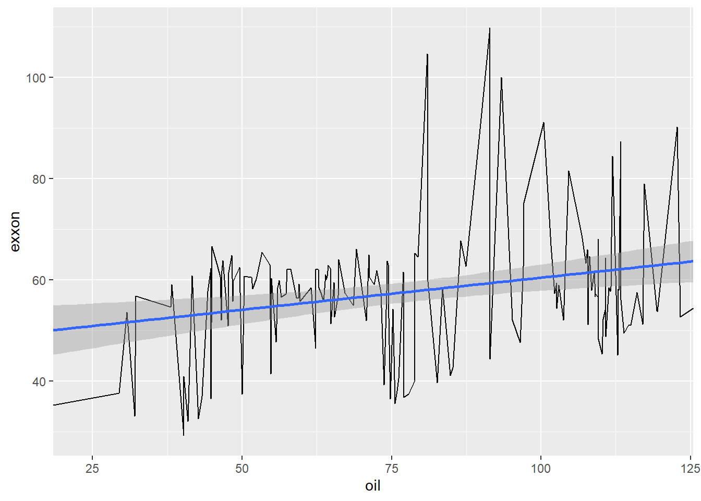

Assignment_4
Task 1
You will find the data for these tasks at the following url:
https://raw.githubusercontent.com/uit-sok-1005-v23/uit-sok-1005-v23.github.io/main/storedata.csv.
The data file contains 7185 observations and 9 variables.
1: For the last 3 months of 2017, calculate the total Sales by month, for Region 1 and Region 9 in the Customer_Segment, Corporate, and Consumer. This output is Table 1.
2: Make a plot of the monthly total Sales in Region 1 and Region 13 in 2015, 2016, and 2017. This output is Figure 1.
3: In Figure 1, identify the months where the total Sales in Region 13 is greater than the total Sales in Region 1. This output is Table 2.
4: Find the average Profit per Customer_Segment and Product_Category in 2017, for all regions except Region 3, 5 and 8. What segment produced the highest average profit? This output is Table 3.
Task 2
In this task, feel free to use any API or package/library that downloads the data to your session. Use code and download daily stock prices for Exxon Mobil Corporation (XOM), traded at NYSE. The Yahoo! Finance site is a convenient place to find the data . Use the Adjusted closing price from January 4th 2010 as the starting date. And calculate the monthly average using trading volume as a weight, and save this variable as "exxon".
Use code to download the daily Brent Crude Oil Price from FRED from January 4th 2010 as the starting date. And calculate the monthly arithmetic average. Save the monthly arithmetic average values as "oil".
In both variables, take December 2022, or 2022:12 for shorthand as a last data point.
Plot both variables, i.e., exxon and oil " in the same plot window. Here, the x-axis should be the "date" variable. Comment on the plots.

Now take "exxon" as a y-variable and "oil" as an x-variable.

Use R's lm() function. Set the variable on the y-axis and x-axis, and specify the data set.
Call:
lm(formula = exxon ~ oil, data = task2)
Coefficients:
(Intercept) oil
48.1373 0.1282 After "running" the code, how do you interpret the estimated coefficients?
The intercept coefficient shows the estimated value of exxon when oil is equal to 0, but it may now have a practical interpretation in this context since its unlikely for oil price to be 0.
The slope coefficient of 0.1282 means that for every one increase in x, exxon’s value will increase by 0.1282. This menas there is a positive linear relationship between oil prices and Exxon’s share price, indicating that higher oil prices are associated with higher share prices for Exxon.